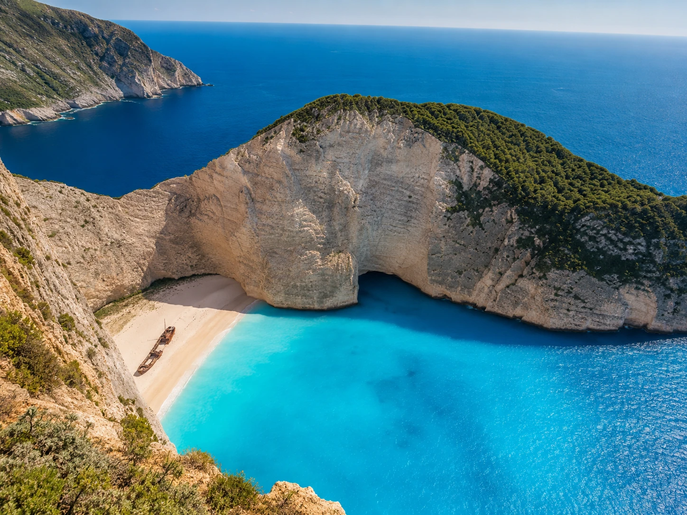
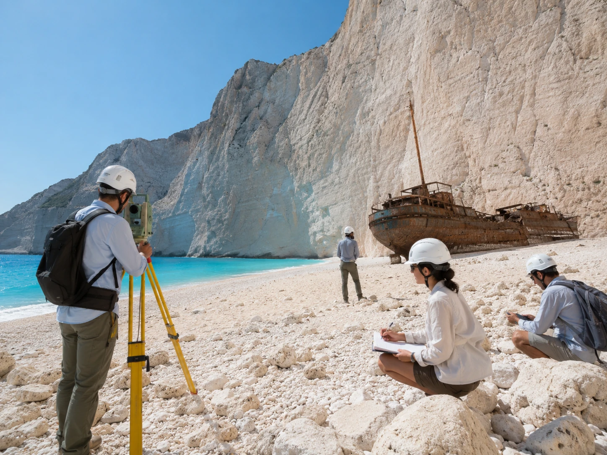
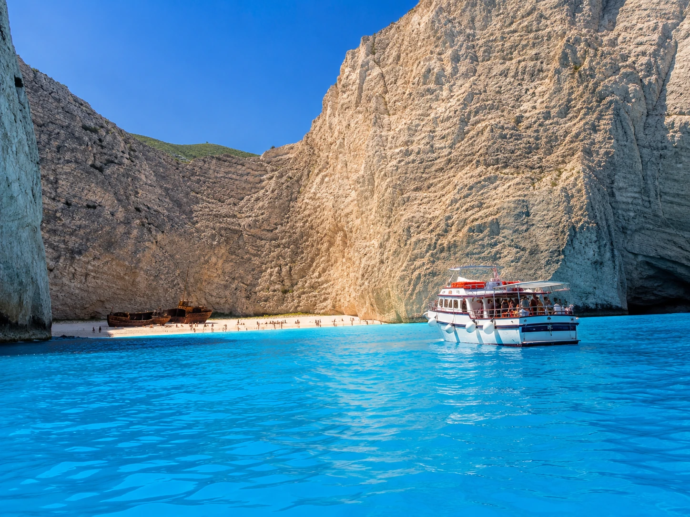
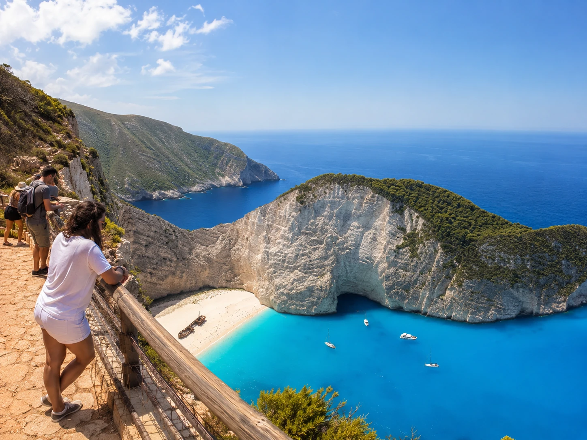

Slávna pláž Navagio na gréckom ostrove Zakynthos by mohla v najbližších rokoch prejsť výraznou obnovou. Grécky poslanec za Zakynthos Dionysios Aktypis uviedol, že cieľom je dokončiť plánované práce do leta 2027. Neznamená to však, že v tomto termíne bude pláž automaticky opäť otvorená pre turistov.
Na sociálnych sieťach a v niektorých médiách sa objavila informácia, že Navagio sa v lete 2027 znovu otvorí návštevníkom. Presnejšie však je, že leto 2027 je zatiaľ plánovaným termínom dokončenia stavebných a záchranných prác.
O sprístupnení pláže sa má rozhodovať samostatne podľa bezpečnostnej situácie.
Čo oznámil Dionysios Aktypis
Dionysios Aktypis, poslanec gréckeho parlamentu za Zakynthos, hovoril o pripravovanom projekte obnovy pláže a záchrany známeho vraku lode Panagiotis.
Podľa jeho vyjadrení by mali práce trvať približne jeden rok od podpisu zmluvy. Cieľom je, aby boli dokončené počas leta 2027.
Aktypis však zároveň upozornil, že samotné dokončenie projektu ešte neznamená automatické otvorenie pláže. Rozhodnutie o tom, či sa návštevníci budú môcť opäť pohybovať priamo na pláži, bude patriť gréckym bezpečnostným orgánom a Civilnej ochrane.
Grécke úrady chcú obnovu Navagia dokončiť do leta 2027. O prípadnom otvorení pláže pre návštevníkov sa však rozhodne až podľa výsledkov bezpečnostných posudkov.

Pláž chcú rozšíriť smerom do mora
Jednou z najväčších plánovaných zmien je umelé doplnenie pobrežia.
Na pláž a do plytkej časti zálivu sa má priviezť približne 45 000 kubických metrov piesku, štrku a kameniva. Pláž by sa tým mala rozšíriť približne o 30 metrov smerom do mora.
Úpravy sa majú týkať úseku dlhého približne 193 metrov.
Hlavným cieľom nie je vytvoriť väčšiu pláž pre turistov, ale ochrániť vrak lode Panagiotis pred zimnými vlnami. More sa počas búrok dostáva až k vraku a postupne urýchľuje jeho rozpad.
Nová vrstva materiálu by mala vytvoriť väčšiu vzdialenosť medzi vrakom a morom.
Koľko má projekt stáť
Rozpočet prvej časti projektu, ktorá sa týka rozšírenia pobrežia, dosahuje približne 3,87 milióna eur bez DPH. S DPH by malo ísť približne o 4,8 milióna eur.
Firmy môžu predkladať ponuky do začiatku augusta 2026.
Podľa podmienok tendra má realizácia trvať 340 dní od podpisu zmluvy. Ak sa celý proces nezačne oneskorovať a počas prác sa neobjavia väčšie komplikácie, dokončenie v lete 2027 je teoreticky možné.
Harmonogram však zostáva pomerne tesný.
Po uzavretí tendra bude potrebné vyhodnotiť ponuky, podpísať zmluvu a pripraviť samotnú realizáciu. Práce môže ovplyvniť aj počasie, stav mora a náročný prístup do uzavretého zálivu.

Opravovať sa má aj samotný vrak
Rozšírenie pobrežia je len jednou časťou pripravovanej obnovy.
Samostatne sa plánuje konzervácia a spevnenie vraku lode Panagiotis. Loď postupne koroduje a jej konštrukcia sa vplyvom mora, vetra a času rozpadáva.
Vrak sa stal symbolom Zakynthosu a patrí medzi najznámejšie turistické miesta v celom Grécku.
Dionysios Aktypis uviedol, že celkové náklady na obnovu oblasti môžu dosiahnuť približne deväť miliónov eur. Táto suma zahŕňa viacero pripravovaných zásahov, nielen aktuálny projekt rozšírenia pláže.
Po dokončení prác by mal byť areál odovzdaný do správy mesta Zakynthos, ktoré by sa malo starať o jeho údržbu a budúcu prevádzku.
Najväčším problémom zostávajú útesy
Hlavným dôvodom dlhodobého zatvorenia pláže nie je iba zlý stav vraku.
Najväčšie riziko predstavujú vysoké vápencové útesy, ktoré obklopujú celý záliv. V minulosti sa tu viackrát uvoľnili skaly a došlo aj k zosuvom.
Grécke úrady preto oblasť považujú za rizikovú.
Aktuálne plánované doplnenie pobrežia má pomôcť najmä pri ochrane vraku pred morom. Samo osebe však nemusí vyriešiť riziko padania skál z útesov.
Práve preto nie je možné vopred sľúbiť, že po dokončení prác bude pláž automaticky otvorená.
Pred prípadným sprístupnením bude pravdepodobne potrebné nové geologické posúdenie, rozhodnutie Civilnej ochrany a stanovenie presných pravidiel pohybu lodí aj návštevníkov.
Ako by mohlo vyzerať budúce otvorenie
Ak bude pláž v budúcnosti sprístupnená, nemusí fungovať rovnako ako v minulosti.
Možný je kontrolovaný režim s obmedzeným počtom návštevníkov, presne určenými miestami na vystupovanie z lodí alebo s časovými intervalmi pre jednotlivé výletné lode.
Časť pláže najbližšie k útesom môže zostať úplne neprístupná.
Úrady by mohli zaviesť aj bezpečnostné zóny, dohľad pracovníkov, evakuačný plán alebo dočasné uzatváranie zálivu pri zlom počasí.
Ide však zatiaľ iba o možné scenáre. Konkrétny návštevnícky režim zatiaľ nebol oficiálne predstavený.

Aké pravidlá platia v súčasnosti
Počas turistickej sezóny 2026 zostáva vstup priamo na pláž zakázaný.
Návštevníci sa nesmú na pláži vyloďovať a v zálive je zakázané plávanie. Lode musia rešpektovať bezpečnostnú vzdialenosť od pobrežia a nesmú pri pláži kotviť.
Navagio je možné vidieť z mora počas výletnej plavby, ale iba z povolenej vzdialenosti.
Výhľad na pláž ponúka aj horná vyhliadka nad útesmi. Aj na tomto mieste však treba rešpektovať zábrany a nevstupovať mimo oficiálneho priestoru.
Pohyb po okrajoch útesov môže byť mimoriadne nebezpečný.

Projekt má aj svojich kritikov
Plán priviezť do zálivu desiatky tisíc kubických metrov materiálu vyvolal v Grécku aj odbornú diskusiu.
Niektorí geológovia upozorňujú, že silné zimné vlny môžu časť navezeného materiálu postupne odplaviť. Objavili sa preto otázky, či bude riešenie dostatočne trvácne a či sa investované milióny podarí efektívne využiť.
Podporovatelia projektu argumentujú tým, že cieľom nie je zastaviť všetky prírodné procesy. Rozšírenie pobrežia má najmä znížiť pôsobenie vĺn na vrak a vytvoriť podmienky na jeho konzerváciu.
Definitívny výsledok bude možné posúdiť až po dokončení prác a po niekoľkých zimných sezónach.
Otvorenie v roku 2027 zatiaľ nie je isté
Správa o možnom návrate turistov na pláž Navagio je pre Zakynthos veľmi dôležitá. Ide o jedno z najfotografovanejších miest v Grécku a o symbol celého ostrova.
Zatiaľ však treba rozlišovať medzi plánovaným dokončením prác a potvrdeným otvorením pláže.
Potvrdené je, že grécke úrady pripravujú veľký projekt obnovy pobrežia a záchrany vraku. Dionysios Aktypis uviedol leto 2027 ako cieľ dokončenia prác.
Nepotvrdené zostáva, či budú môcť turisti už počas leta 2027 opäť vystupovať priamo na pláž.
Rozhodujúce budú nové bezpečnostné posudky, stav útesov a stanovisko gréckej Civilnej ochrany.
Pre cestovateľov, ktorí plánujú dovolenku na Zakynthose, preto zatiaľ platí jednoduché odporúčanie: s návštevou pláže priamo pri vraku v roku 2027 ešte nemožno počítať ako s istotou. Navagio však bude možné naďalej sledovať z vyhliadky alebo z povolenej vzdialenosti počas plavby loďou.
Článok rozlišuje medzi plánovaným dokončením obnovy a potvrdeným sprístupnením pláže. Pred cestou si vždy overte aktuálne bezpečnostné opatrenia a pokyny miestnych úradov.